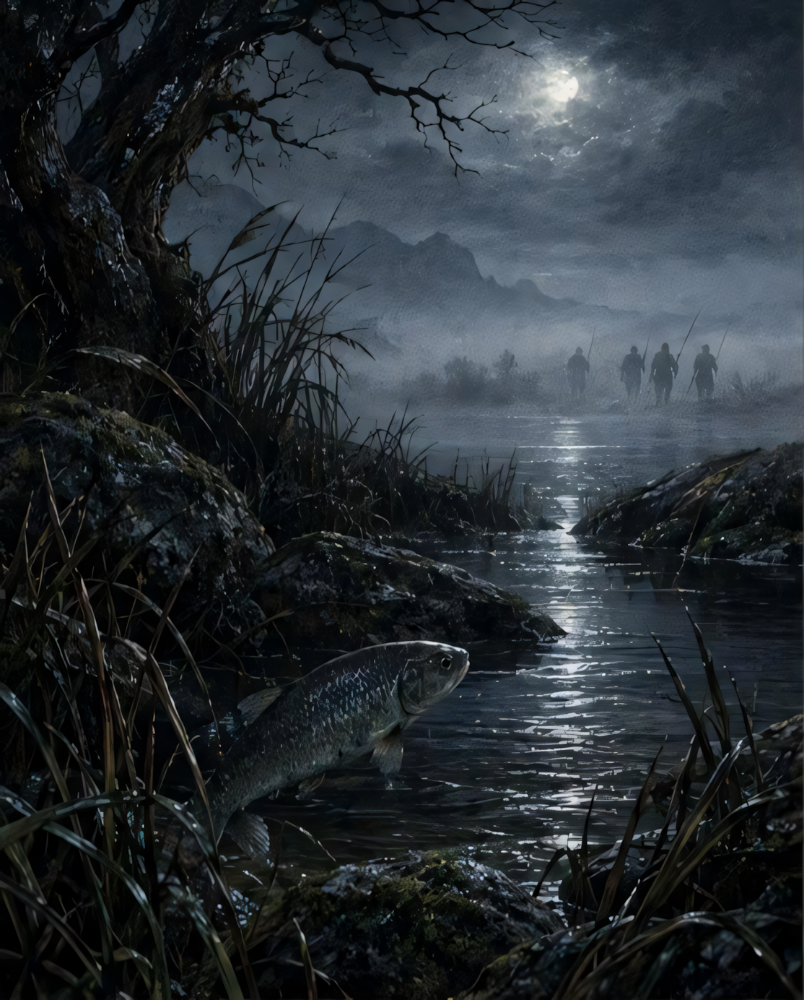
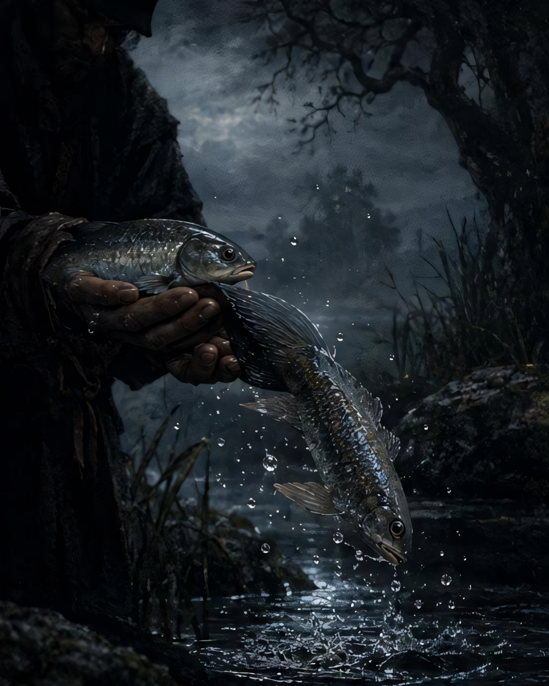
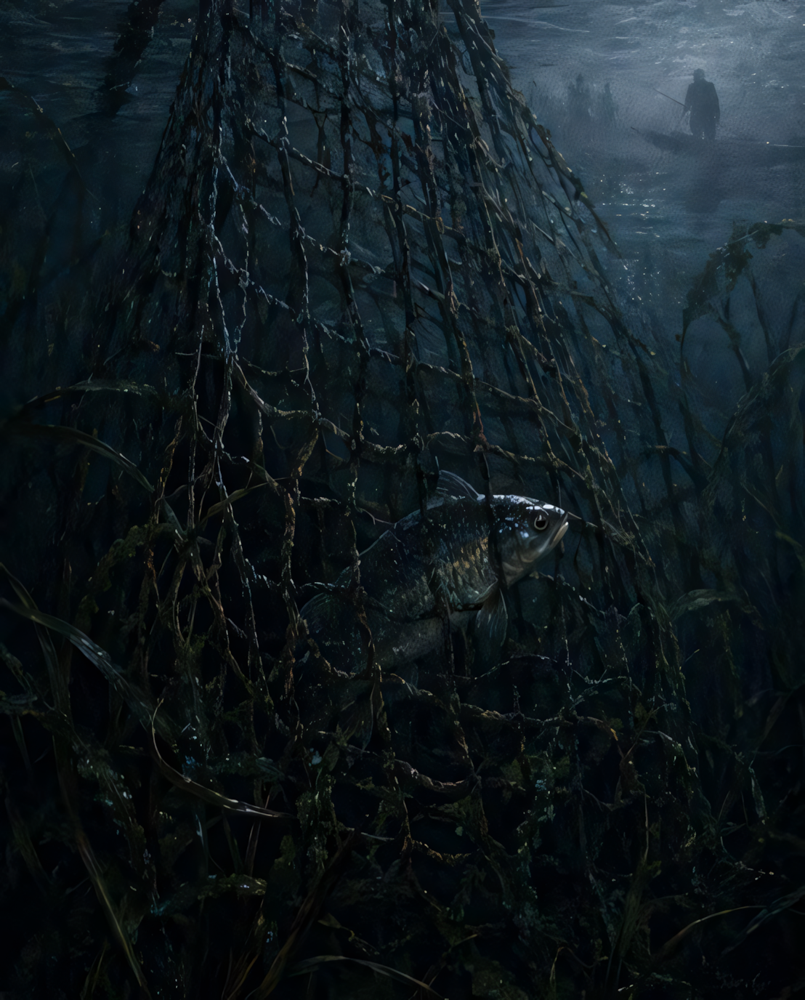

۰۱تمثیل
تمثیل
سه ماهی، سه سیمای آدمیاند؛ حازم نماد دوراندیشی، زیرک نماد چارهگری و عاجز نماد غفلت.
سه ماهی، یک برکه و خطری که نزدیک میشود؛ حکایتی کوتاه که ارزش اندیشیدن پیش از حادثه را به تصویر میکشد.
در روزگار قدیم، برکهای دورافتاده بود؛ آبش زلال و کنارهاش خاموش. در همین آب آرام، سه ماهی زندگی میکردند: حازم، زیرک و عاجز.
آرامش برکه برای هر سه یکسان بود، اما نگاهشان به آینده یکسان نبود. یکی پیش از رسیدن خطر میاندیشید، دیگری در لحظهی خطر راهی میجست و سومی به آرامش ظاهری دل خوش میکرد.
« آدمی را در آسودگی نمیآزمایند؛ آنگاه که حادثه نزدیک میشود، شیوهی اندیشیدن او آشکار میگردد. »

چون بانگ شکارگران برخاست، حازم خطر را همان لحظه شناخت. برای او، صبر کردن به معنای بیعمل ماندن نبود؛ برعکس، فهمید که هنوز فرصت انتخاب دارد.
او راه ماندن را با راه رفتن مقایسه کرد و دانست که آبگیر دیگر جای امنی نیست. پس پیش از آنکه حادثه به او برسد، راهی به سوی برکهای دیگر جست و بیدرنگ رفت.

زیرک مانند حازم از همان آغاز نرفت. لحظهای درنگ کرد؛ اما وقتی خطر به واقعیت بدل شد، دست از اندیشیدن نکشید.
او خود را مرده پنداشت و بر پهلو افتاد. شکارگر او را از آب بیرون کشید. درست در همان لحظه، زیرک از فرصت استفاده کرد، با تابی ناگهانی خود را به آب بازگرداند و رَست.

عاجز نه تدبیری اندیشید و نه خطری را جدی گرفت. آب آرام بود و همین آرامش، او را آسوده کرد؛ گویی سکونِ امروز میتوانست خطرِ فردا را از میان ببرد.
اما حادثه منتظر آمادگی کسی نمیماند. دام آمد و او را برد. آنگاه پشیمانی دیگر سودی نداشت؛ زیرا فرصتی که در آرامش وجود داشت، در هنگام گرفتاری دیگر وجود نداشت.
داستان در ظاهر دربارهی سه ماهی است؛ اما ساختار تمثیلی آن، سه واکنش انسانی در برابر آینده و حادثه را روبهروی هم میگذارد.
سه ماهی، سه سیمای آدمیاند؛ حازم نماد دوراندیشی، زیرک نماد چارهگری و عاجز نماد غفلت.
تقابل اصلی میان «تدبیر» و «تسلیم» شکل میگیرد؛ یکی پیش از حادثه میبیند و دیگری پس از آن پشیمان میشود.
برکه، جهانی محدود و ظاهراً امن است؛ شکارگر و دام، نشانهی حادثهای هستند که آرامش ظاهری را برهم میزنند.
روایت بر ایجاز، کنایه و نتیجهگیری اخلاقی تکیه دارد؛ همان ویژگیای که حکایت را از یک قصهی صرف فراتر میبرد.
حازم به ما یادآوری میکند که بهترین زمانِ چارهجویی، پیش از وقوع حادثه است. زیرک نشان میدهد که حتی در بحران نیز اندیشه میتواند راه نجات بسازد. عاجز هشدار میدهد که آسودگیِ امروز، تضمینِ فردا نیست.
پیرایه خرد · حکایتی در باب دوراندیشی و چارهگریاین حکایت، کوتاه است؛ اما پرسشی بلند در برابر ما میگذارد: اگر نشانهی خطر را امروز ببینیم، فردا چه خواهیم کرد؟